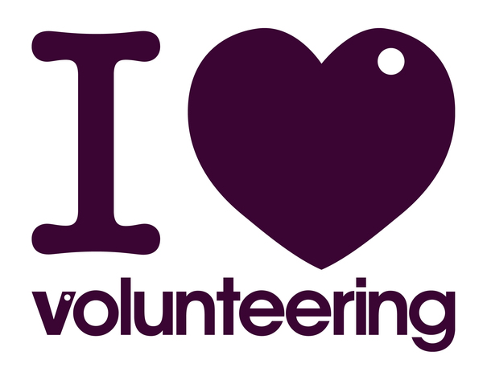

Montana Connected handles more than 2,500 cats and dogs every year. The average daily census in the summer is about 290 animals (200 cats, 90 dogs). The average daily census in the winter is about 195 animals (130 cats, 65 dogs).
MC has an open door policy and does not euthanize for space or length of time. Being an "open door" shelter means that MC accepts any lost, abandoned or surrendered companion animals from anywhere. The animals arrive at MC for all sorts of reasons and in every imaginable condition. No matter the circumstance or condition, MC accepts them.
All incoming animals are given both a medical and behavioral evaluation. If they are deemed adoptable with reasonable medical and/or behavioral treatment, then they are held until they are adopted. If they are deemed unadoptable, then they are humanely euthanized. Animals are re-evaluated regularly to ensure that they remain adoptable and are maintaining a reasonable quality of life. Animals are never euthanized at MC after an arbitrary number of days or for space.
As important as re-homing is, MC also takes seriously its obligation to the community to ensure it does not send out animals that are sick or a danger to the community. Nobody wants to live near an aggressive dog that might bite a child or kill another dog or cat. MC is committed to the concept that every animal that leaves MC for a new home must be an ambassador, not a liability, for other homeless animals waiting in shelters to be adopted.
Last year MC reunited 551 pets with their families and found new homes for 1,469 animals.

Volunteers are appreciated.
(c) Montana Connected 2012. All rights reserved.